🎓 Incoming Ph.D. @HKUST
Department of Computer Science and Engineering, The Hong Kong University of Science and Technology
|
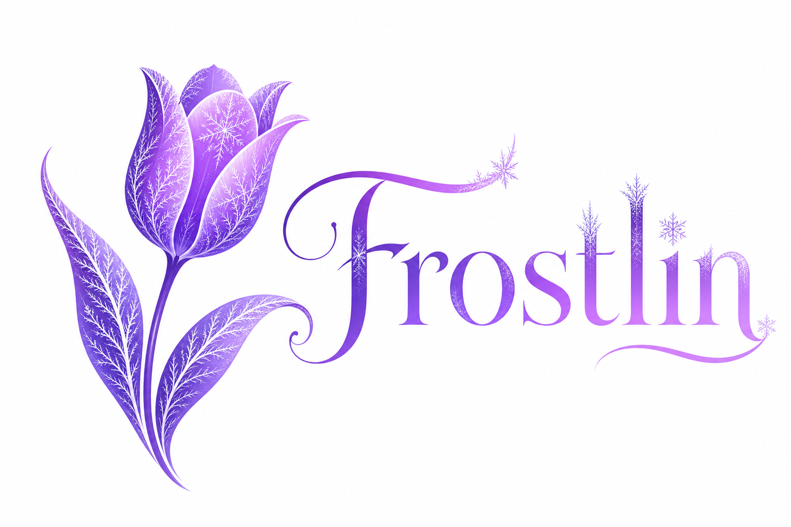 |


Biography
Hello! I am an incoming Ph.D. student at HKUST, where I will join the DV Lab (Deep Vision Lab) in Fall 2027, supervised by Prof. Jiaya Jia (Chair Professor, IEEE & ACM Fellow).
Previously, I was fortunate to collaborate with Shaobo Wang and Prof. Linfeng Zhang at Shanghai Jiao Tong University's School of Artificial Intelligence. I then spent a wonderful time at the AIDATA Team, Alibaba Group, working closely with Que Shen and Dayiheng Liu from the Qwen Team, contributing to reasoning & agentic evaluation and post-training data for Qwen3.5/3.6/3.7.
Currently, I am a research intern at Tencent Hunyuan, Qingyun Program, focusing on agentic data construction and evaluation, contributing to the training of the Hy foundation model (previously Hy3). I am fortunate to collaborate with Prof. Xiangyu Yue at MMLab, The Chinese University of Hong Kong, and Prof. Meng Han at Zhejiang University.
My research approaches Agentic AI from a Data-Centric LLM perspective, spanning the full lifecycle of training, inference, and evaluation. I focus on scalable environment construction and agent self-evolution, driving continuous improvement in reasoning and action capabilities through the synergy of data and environment synthesis and evaluation.
Feel free to contact me by email if you are interested in discussing or collaborating with me.
News
| [2026] We release SearchEyes, achieving SOTA among open-source multimodal search agents on 6 benchmarks! |
| [2026] Joined Tencent Hunyuan, Qingyun Program as research intern! |
| [2026] KAWHI accepted by ECCV 2026! |
| [2026] Agentic Proposing accepted by ICML 2026! |
| [2026] We release Socratic-SWE, self-evolving coding agents via trace-derived agent skills! |
| [2026] One paper submitted to COLM 2026, good luck! |
| [2026] Socratic-Geo accepted by CVPR 2026! |
| [2026] Two papers submitted to ECCV 2026, good luck! |
| [2026] Two papers submitted to CVPR 2026, good luck! |
| [2026] One paper submitted to ICLR 2026, good luck! |
| [2025] Joined AIDATA Team, Alibaba Group as research intern! |
| [2025] Joined School of AI, SJTU as research intern! |
Education
|
The Hong Kong University of Science and Technology (HKUST) Incoming Ph.D. Student, advised by IEEE/ACM Fellow Chair Prof. Jiaya Jia 2027 - 2031 (Expected) |
|
|
Shanghai University of Finance and Economics, Shanghai B.S. Candidate in Computer Science and Technology 2023 - 2027 (Expected) |
|
Industrial Experience

|
Tencent Hunyuan, Qingyun Program Research Intern Focus: LLM Agentic DataJune 2026 - Present |
|
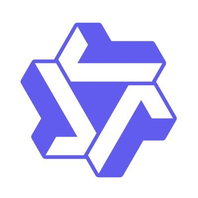 |
AIDATA Team, Alibaba Group Research Intern Focus: LLM/MLLM Data Construction & Evaluation; Collaborated with Qwen TeamMay 2025 - May 2026 |
Research Internship
|
MMLab, The Chinese University of Hong Kong Research Intern Advisor: Prof. Xiangyu Yue; Focus: Visual Agentic AIMarch 2026 - Present |
|
|
School of Artificial Intelligence, Shanghai Jiao Tong University Research Intern Advisor: Prof. Linfeng Zhang; Focus: Efficient AIJuly 2025 - Present |
|
|
College of Computer Science and Technology, Zhejiang University Research Intern Advisors: Prof. Dezhang Kong & Prof. Meng Han; Focus: LLM ReasoningMarch 2025 - July 2025 |
|
Representative Publications
|
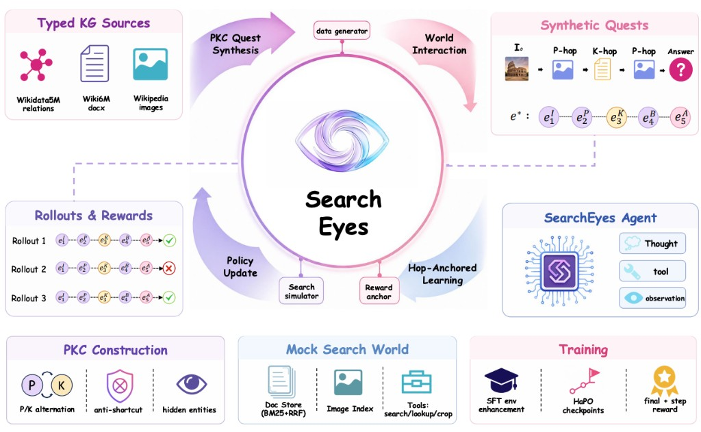 |
SearchEyes: Towards Frontier Multimodal Deep Search Intelligence via Search World Simulation Zhengbo Jiao, Yiming Cheng, Yilei Jiang, Kaituo Feng, Rui Huang, Tianyi Jiang, Juanxi Tian, Qunzhong Wang, Tailai Chen, Qianshan Wei, Chuan Xiao, Shanyu Rong, Yangfu Li, Yanhan Zhou, Yifan Zhang, Xiangyu Yue† arXiv preprint arXiv:2607.05943. |
|
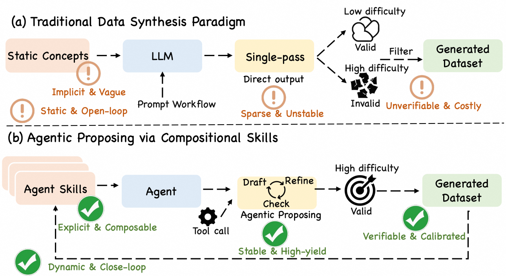 |
Agentic Proposing: Enhancing Large Language Model Reasoning via Compositional Skill Synthesis Zhengbo Jiao, Shaobo Wang, Zifan Zhang, Xuan Ren, Wei Wang, Bing Zhao, Hu Wei†, Linfeng Zhang† Accepted by ICML 2026. arXiv preprint arXiv:2602.03279.[arXiv] |
|
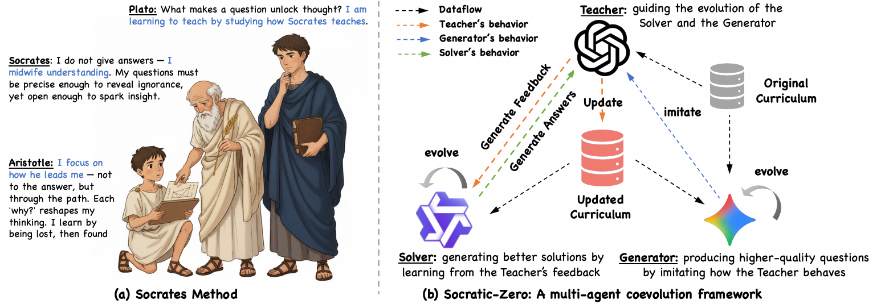 |
Socratic-Zero: Bootstrapping Reasoning via Data-Free Agent Co-evolution Zhengbo Jiao*, Shaobo Wang*, Zifan Zhang, Yilang Peng, Xu Ze, Boyu Yang, Wei Wang, Hu Wei†, Linfeng Zhang† arXiv preprint arXiv:2509.24726. Reported by Machine Heart.[arXiv] |
|
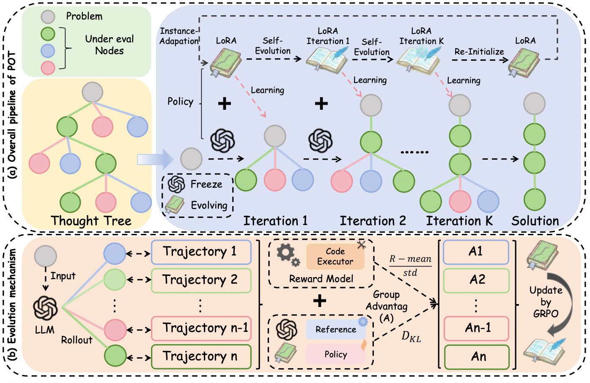 |
Policy of Thoughts: Scaling LLM Reasoning via Test-time Policy Evolution Zhengbo Jiao, Hongyu Xian, Qinglong Wang, Yunpu Ma, Zhebo Wang, Zifan Zhang, Dezhang Kong, Meng Han† Accepted by EMNLP 2026. arXiv preprint arXiv:2601.20379.[arXiv] |
|
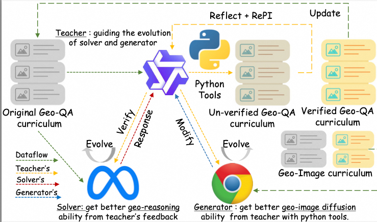 |
Socratic-Geo: Synthetic Data Generation and Geometric Reasoning via Multi-Agent Interaction Zhengbo Jiao*, Shaobo Wang*, Zifan Zhang, Wei Wang, Bing Zhao, Hu Wei†, Linfeng Zhang† Accepted by CVPR 2026. arXiv preprint arXiv:2602.03414.[arXiv] |
Other Publications
|
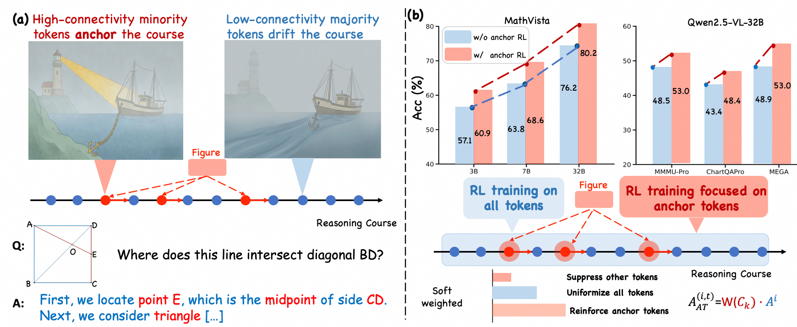 |
Credit Where It's Due: Cross-Modality Connectivity Drives Precise RL for MLLM Reasoning Zhengbo Jiao, Shaobo Wang, Zifan Zhang, Wei Wang, Bing Zhao, Hu Wei†, Linfeng Zhang† arXiv preprint arXiv:2602.11455.[arXiv] |
|
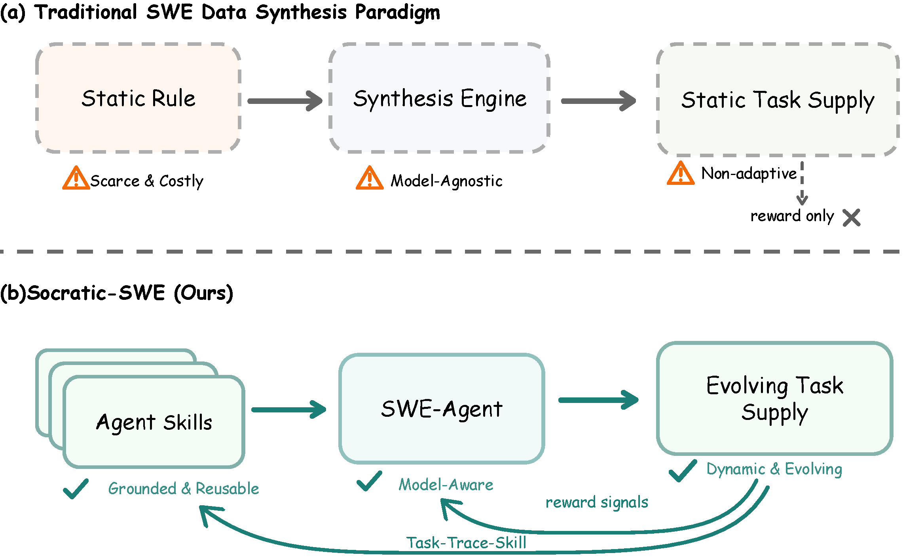 |
Socratic-SWE: Self-Evolving Coding Agents via Trace-Derived Agent Skills Chuan Xiao*, Zhengbo Jiao*, Shaobo Wang, Wei Wang, Bing Zhao, Hu Wei, Linfeng Zhang†, Lin Qu arXiv preprint arXiv:2606.07412. Project Leader.[arXiv] |
|
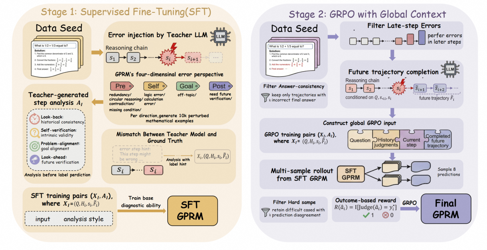 |
GPRM: Global Perspective Process Reward Model via Context-Aware Credit Assignment Zifan Zhang*, Zhengbo Jiao*, Shaobo Wang, Wei Wang, Bing Zhao, Cheng fang, Xiaoxiao Xu†, Hu Wei†, Linfeng Zhang† Blog.[blog] |
|
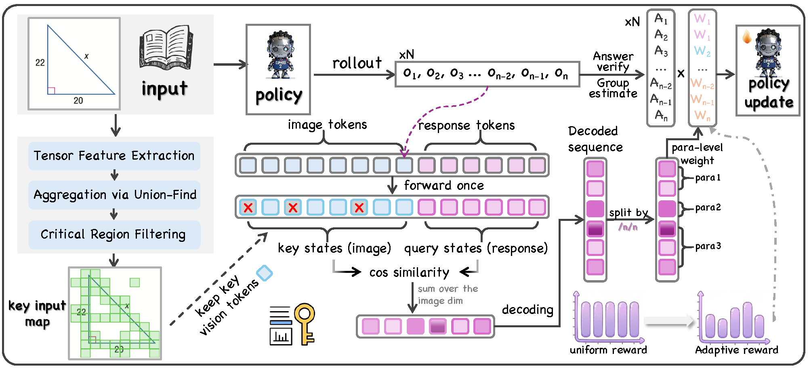 |
Bridging Visual Representation and Reinforcement Learning from Verifiable Rewards in Large Vision-Language Models Yuhang Han, Yuyang Wu, Zhengbo Jiao, Yiyu Wang, Xuyang Liu, Shaobo Wang, Hanlin Xu, Xuming Hu, Linfeng Zhang Accepted by ECCV 2026. arXiv preprint arXiv:2603.27375.[arXiv] |
|
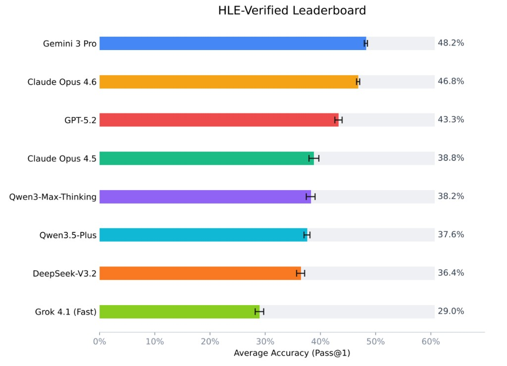 |
HLE-Verified 2.0: A Systematic Verification and Structured Revision of Humanity's Last Exam Qwen Team & Alibaba AIData Core Contributor. |
|
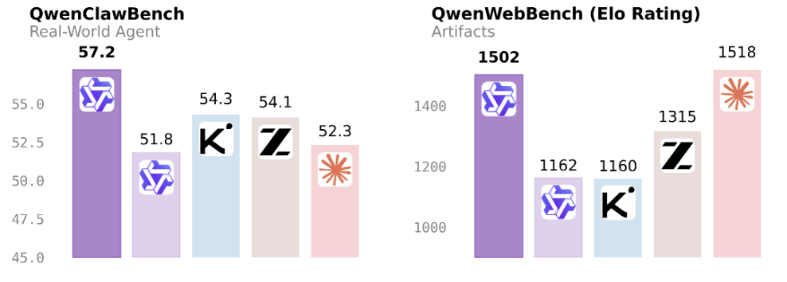 |
QwenClawBench: Real-User-Distribution Benchmark for OpenClaw Agents & QwenWebBench: Front-End Code Generation Benchmark Qwen Team & Alibaba AIData Core Contributor. |
Tech Report
|
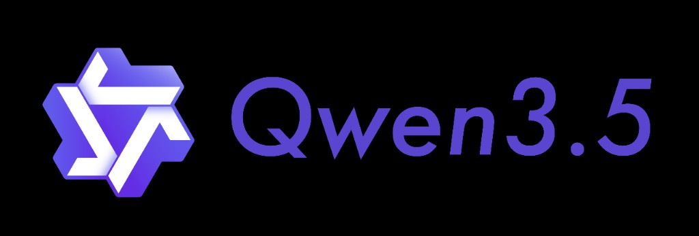 |
Qwen3.5 / 3.6 / 3.7 Technical Blog Qwen Team, Alibaba Group Contributor. |
|
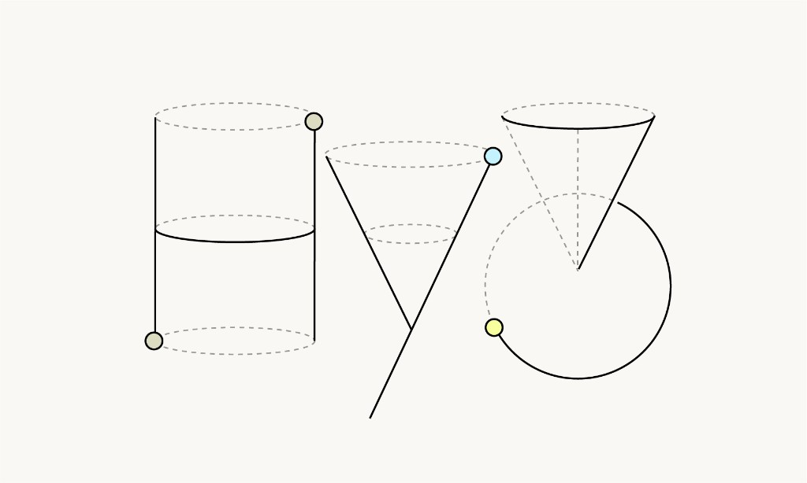 |
Hunyuan Hy3 Technical Blog Tencent Hunyuan Team Contributor. |
Open-Source Projects
|
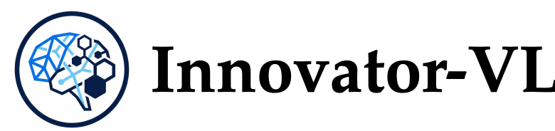 |
Innovator-VL: Scientific Multimodal LLM with High Data Efficiency Innovator Team [GitHub] [HuggingFace] |
|
WorldFoundry: Unified World Model Inference & Evaluation Infrastructure OpenEnvision Core Contributor. |
|
Honors & Awards
| [2025] First-Class People's Scholarship |
| [2024 & 2025] National Endeavor Scholarship |
| [2024] Second Prize, Shanghai Mathematical Modeling Competition |
| [2024] Second Prize, Shanghai Mathematics Competition |
| [2023] First Prize, Gansu Chinese Mathematical Olympiad (CMO) |
Academic Service
- Conference Reviewer:
- Annual Conference on Neural Information Processing Systems (NeurIPS), 2026
- Conference on Language Modeling (COLM), 2026
- International Conference on Machine Learning (ICML), 2026
- European Conference on Computer Vision (ECCV), 2026
- Annual Meeting of the Association for Computational Linguistics (ACL), 2026
- Annual Meeting of the Association for Computational Linguistics (ACL) Industry Track, 2026
- International Conference on Learning Representations (ICLR) Workshop, 2026